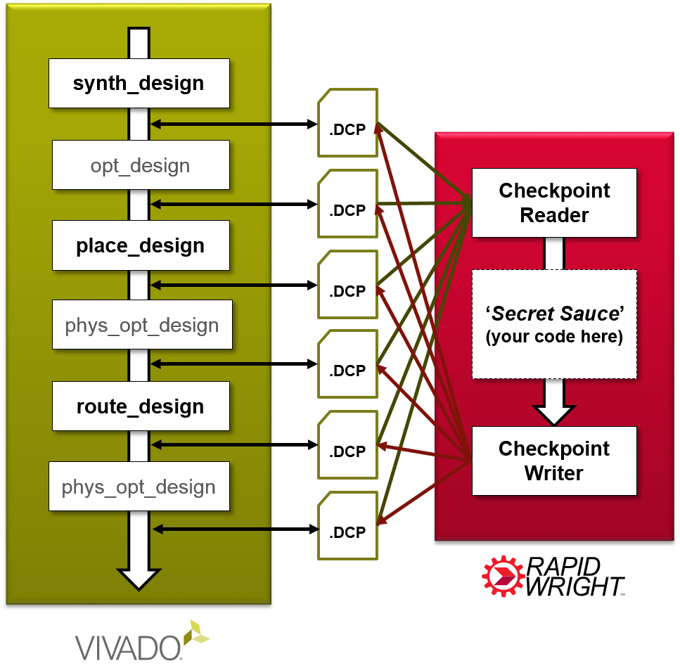

Introduction¶
Table of Contents
What is RapidWright?¶
RapidWright is an open source Java framework that enables netlist and implementation manipulation of modern Xilinx FPGA and SoC designs. It compliments Xilinx’s Vivado® Design Suite and provides developers with capabilities such as:
Fast loading accurate device model views for all Vivado-supported Xilinx devices (Series 7, UltraScale™, and UltraScale+™)
Reads and writes unencrypted Vivado Design Checkpoint files (.dcp)
Hundreds of APIs to help build customized solutions to a wide variety of implementation challenges
Examples of how to pre-implement (pre-place and pre-route) IP, relocate such blocks and compose pre-implemented blocks together
Note
RapidWright is not an official product from Xilinx and designs created or derived from it are not warranted. Please see LICENSE.TXT for full details.
Why RapidWright?¶
We believe that when people are empowered to create tailored solutions to their own specific challenges, innovation takes place. We are building RapidWright to be an environment that fosters this caliber of innovation. The commercial FPGA CAD world is in the unfortunate state of being closed source. We hope that with the release and continued development of RapidWright, we can change the status quo of how we develop and interact with FPGAs.
RapidWright’s mission is to:
Facilitate rapid creation of custom design implementation solutions for FPGAs
Foster an ecosystem of research and development in academia and industry
Be fast, efficient, light-weight and easy-to-use
Serve as a platform that can grow into an open source FPGA implementation flow (future work)
What about RapidSmith?¶
RapidWright is a next generation RapidSmith. Previously, RapidSmith was created to enable FPGA CAD tool creation for older Xilinx devices, specifically those supported under ISE. RapidSmith is dependent on the Xilinx Design Language (XDL) which was discontinued in Vivado. Therefore, RapidSmith doesn’t work with newer devices supported exclusively in Vivado (although some valiant efforts have been made to bridge the gap 1, 2).
RapidWright has been significantly overhauled from its parent RapidSmith code. The FPGA device model is cleaner, more data rich, is faster, more memory efficient and adds several insights and capabilities from the Vivado design paradigm. A distinguishing and enabling capability of RapidWright is its ability to read and write unencrypted Vivado Design Checkpoint files. It also maintains full representation of both the logical and physical netlist of FPGA designs.
Vivado and RapidWright¶
The Vivado Design Suite is the tool environment for developing and implementing designs for Xilinx FPGAs and SoCs. Vivado provides both a GUI environment and a Tcl scripting interface to control the various tools and steps involved in development. The Tcl scripting interface is quite powerful in that it provides users with hundreds of commands to manipulate their design. However, despite the breadth of functionality that the Tcl interface offers, it does have some shortcomings.
First, some tasks that a user would want to complete using Tcl constructs and commands takes an inordinate amount of runtime making the task infeasible, especially for large designs. For example, attempting to import routing information via Tcl commands for a full design can take several hours or days.
Second, constructing large, complex operations out of Tcl commands can be inefficient due to its interpreted nature. Many users would also prefer a more mainstream object oriented language with wider support for developing solutions.
Lastly, if the user wants a particular capability that is not available in the provided library of Tcl commands in Vivado, there is generally no alternative.
RapidWright addresses these shortcomings by providing a means to import, modify and export Vivado-based designs independent of the Tcl interface. It achieves this capability by providing APIs that can read and write design checkpoint files (Vivado’s design file format) into and out of the RapidWright framework as illustrated below.
{kind=link}
RapidWright includes a compact, fast-loading device model and hundreds of APIs to help manipulate implementations. These capabilities will enable users to develop new implementation strategies and capabilities that have not been available previously in Vivado. We believe RapidWright provides a foundational framework that opens the door for innovation in the FPGA CAD space.
- 1
White, Brad S., “Tincr: Integrating Custom CAD Tool Frameworks with the Xilinx Vivado Design Suite” (2014). All Theses and Dissertations. 4338. http://scholarsarchive.byu.edu/etd/4338
- 2
Townsend, Thomas James, “Vivado Design Interface: Enabling CAD-Tool Design for Next Generation Xilinx FPGA Devices” (2017). All Theses and Dissertations. 6492. http://scholarsarchive.byu.edu/etd/6492